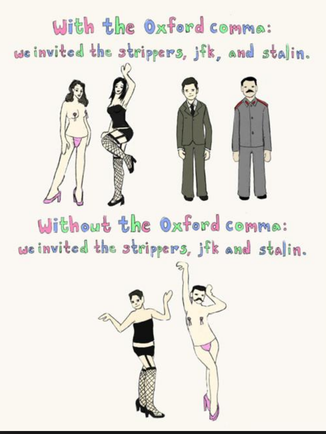

Yanyan Jiang
To all: the deadline for A1 is
To speakers: get ready for the EMSE session
How to write
Advices are from Tao Xie and Michael Ernst.
“Research” means always setting the highest bar.
No fake
Don't hide
Too bad that we all became academic salesman in the involution
How to evaluate a research work's contributions
Evaluation criteria (SE conferences)
From an existing problem (incremental work)
From a new and important problem
And defend your claim of contributions
Story and problem
Evidences
Useful in improving software quality or productivity
Think of your work
Think of a one-minute introduction of your work to big bosses
Don’t make readers a hard time in reading your papers!
Your technical content is already hard enough.
The bad practice: write an essay (at least 120 words)
Vigorous writing is concise. A sentence should contain no unnecessary words, a paragraph no unnecessary sentences, for the same reason that a drawing should have no unnecessary lines and a machine no unnecessary parts. This requires not that the writer make all his sentences short, or that he avoid all detail and treat his subject only in outline, but that every word tell.
—— The Elements of Style
A “least surprise” paper
Top-down approach
Bottom-up approach
First, no spelling mistakes!
Eliminating grammatical mistakes are challenging for non-native speakers
(Majumdar and Niksic; POPL'18)
(1) [Topic Sentence] Large-scale distributed systems are difficult to build and test. (2) On top of the non-determinism arising out of concurrent exchange of messages, these systems must account for partial failures, where components or communication can fail along the way and produce incomplete results. (3) Fault-tolerant components are difficult to design and reason about, ...
distributed systems → basic ideas → the hard part
Each word has its distributed representation (embedding)
Use words consistently across your paper
Vague/offensive/subjective words
Informal writing
Other minor issues
(Just a few examples)
Which one is correct?
Starcraft players usually cannot see the difference.

Be careful!
The one exception we agree on: If the quote is around a symbol. For instance:
Learn from native speaker's papers
Find useful resources